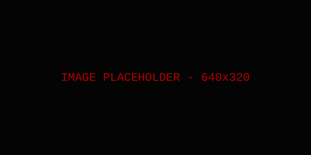

| nom: | Mini Castor |
| age: | ~666 ans |
| occupation: | surfeur du web depuis toujour |
je suis une personna tres sympa, mes je fais plein de faute d'ortograffe pour rigollé. merci de lire mon blogu ultra retro. quelque hobby inclue: regardé des gif animés (tres importent), collezioner des icones 16x16, et ecrir des posts san ponctuation